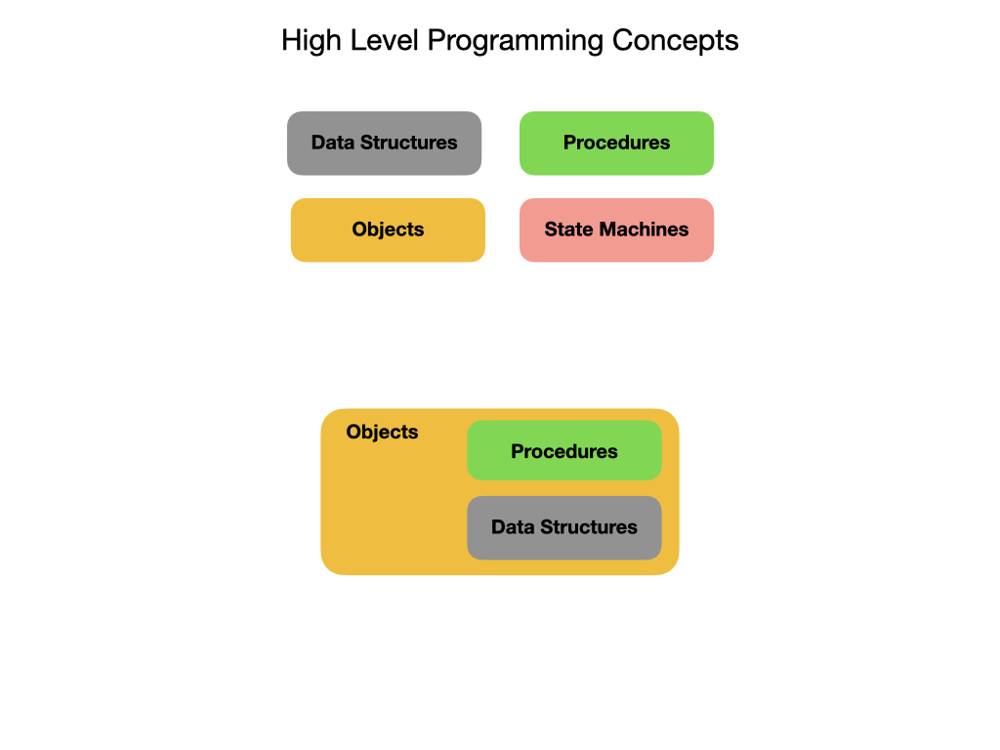

Introduction to Programming
This is a general introduction to programming. It covers concepts that apply to almost all Object Oriented Languages(OLL) although it will use Java examples to illustrate some concepts. The goal is to understand programming at a higher conceptual level, especially in the context of programming robots.
When programming in most modern languages you can break it down into four main categories; Data Structures, Procedures, Objects, and State Machines. Data Structures describe the physical attributes of a system and what its current state is. Procedures are blocks of code that perform tasks when they called. Objects are created to represent physical things or ideas in the real world. Objects encapsulate Data Structures and Procedures to describe its attributes and the tasks that it can perform. State Machines represent the state of a system at any point in time. As time passes a state machine usually transitions from one state to another.

Let’s go over each of these categories in detail.